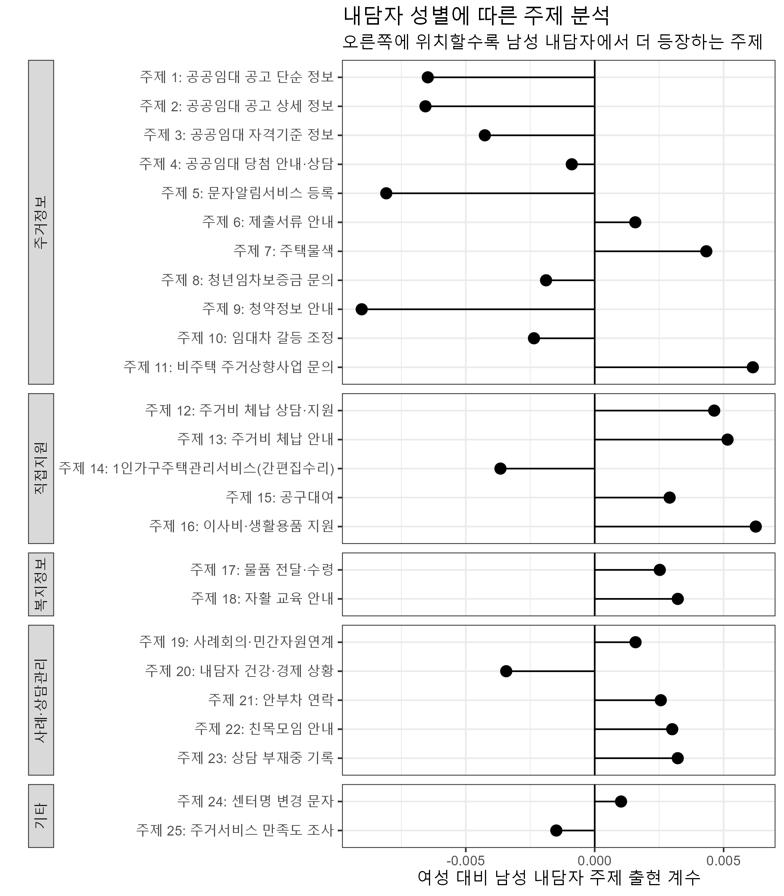
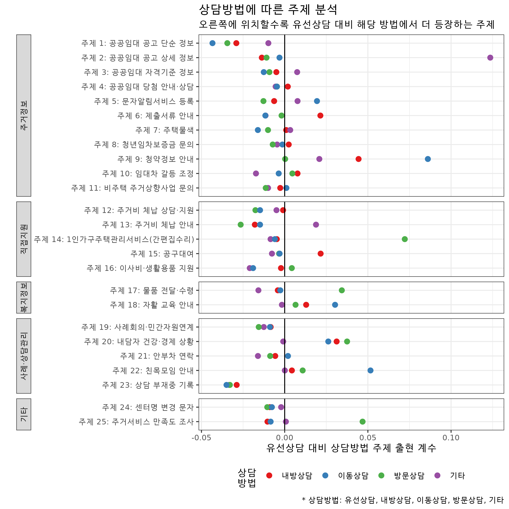

## 패키지 불러오기
pacman::p_load(
"tidyverse", "tidytext", "stm", "data.table", "knitr", "gt", "tidystm")들어가기
토픽모델링 주제와 메타데이터 사이의 공변량를 분석한다. 메타데이터는 텍스트 외 주제와 관련될 수 있는 데이터를 말한다. 내담자 성별이나 상담 방법(유선상담 등)은 특정 주제가 많이 등장할 수도 있다. 이런 공변량(covariate)를 분석하며, 이는 stm 토픽모델링의 장점 중 하나다.
1. 데이터 준비하기
여기서 쓸 데이터는 아래와 같다.
| 샘플 데이터 | 설명 |
|---|---|
| db_meta.csv | 주거상담 메타데이터 |
| stmFinal_fit.rds | stm 모델 |
| 주제정보.csv | 주제정보를 담은 파일 |
1.1. 패키지 불러오기
필요한 패키지를 불러온다.
1.2. 주제정보 불러오기
주제정보를 불러오고 정제한다.
list_topicLabled <- fread("result/stm_labelling/주제정보.csv")[
, `:=` (
topicLabel_f = factor(x = paste0("주제 ", topicNumber_f, ": ", topicName_f),
levels = paste0("주제 ", topicNumber_f, ": ", topicName_f),
labels = paste0("주제 ", topicNumber_f, ": ", topicName_f)),
topicGroup_f = factor(topicGroup_f,
levels = c("주거정보", "직접지원", "복지정보", "사례·상담관리", "기타"),
labels = c("주거정보", "직접지원", "복지정보", "사례·상담관리", "기타"))
)]1.2. stm 모델 불러오기
최종 stm 모델을 불러온다.
tm_fiited <- readRDS("Result/stm_f/stmFinal_fit.rds")1.3. 메타데이터 불러오기
공변량 분석에 필요한 메타데이터를 불러온다.
meta <- fread("data/db_meta.csv")모든 메타데이터가 아닌 이번 실습에선 성별(user_gender)과 상담유형(cons_class; depth-심층상담/basic-초기상담), 상담방법(cons_way)이 주거상담 기록과 관련 있다고 가정하고 메타데이터로 준비했다.
Note
실제 연구 용역에선 위 성별, 상담유형, 상담방법 외 상담연도나 상담경로 등 다른 공변량 변수도 고려했다.
meta %>% slice(1:5) %>% kable()1.4. 메타데이터 전처리
메타데이터를 모델에 넣기 전, 정제하는 과정이다. 특히, 남자와 여자, 심층상담과 초기상담 등 범주형 변수는 바꿔줘야 한다.
meta_aj <- meta[
, `:=` (user_gender = ifelse(user_gender %in% "남자", 0, 1), # 여성을 1, 남성을 0로 재정의
cons_class = ifelse(cons_class %in% "depth", 0, 1), # 초기상담을 1, 심층상담을 0으로 재정의
cons_way = case_when( # 5개 상담방법 정의
cons_way %in% c("유선", "전화") ~ "유선상담",
cons_way %in% c("내방") ~ "내방상담",
cons_way %in% c("이동상담", "현장상담") ~ "이동상담",
cons_way %in% c("방문") ~ "방문상담",
TRUE ~ "기타"))] %>% as_tibble()2. 모델링
아래 코드로 공변량을 고려한 모델링을 해준다. 여기서 formula 공변량 함수다. 1:25는 주제 1번부터 25번을 고려한다는 것이고, +로 이어진 3개 공변량 변수와 관련됐을 거라는 의미다.
prep <- estimateEffect(
formula = 1:25 ~ user_gender # 공변량 모델링
+ cons_class + cons_way,
stmobj = tm_fiited, # stm 모델
metadata = meta_aj, # 메타데이터
uncertainty = "Global")3. 모델링 결과 해석
모델링 값 추출
성별과 주거상담 주제가 어떤 관계가 있는 지를 예시로 살펴보자. extract.estimateEffect은 모델링 결과를 확인하는 데 도움을 준다.
extract.estimateEffect(
prep, # 공변량모델델
covariate = "user_gender", # 보려는 공변량
method = "difference", # 남자-여자 차이
cov.value1 = "남자", # 0으로 지정한 label(남성)
cov.value2 = "여자" # 1으로 지정한 label(여성)
) 여기서는 모델에서 할당한 주제 1은 남자가 여자에 비해 더 많은 것(estimate = 0.00587 > 0)으로 나타났다.
read_rds("result/t1.rds") %>% slice(1:3) %>% kable()모델링 시각화
성별에 따른 주제 분석
위 모델링 결과를 시각화하면 다음과 같다.
extract.estimateEffect(
prep,
covariate = "user_gender",
#topics = 2,
method = "difference",
cov.value1 = "남자",
cov.value2 = "여자"
) %>%
left_join(list_topicLabled, by = c("topic" = "topicNumber_model")) %>%
mutate(topicLabel_f = factor(topicLabel_f, levels = rev(list_topicLabled$topicLabel_f))) %>%
ggplot(aes(x = topicLabel_f, y = estimate, group = topicGroup_f)) +
geom_segment(aes(y = 0,
x = topicLabel_f,
yend = estimate,
xend = topicLabel_f),
color = "black") +
# geom_errorbar(aes(ymin = ci.lower, ymax = ci.upper), position='dodge') +
geom_point(size = 3) +
geom_hline(yintercept = 0)+
coord_flip() +
facet_grid(topicGroup_f ~ ., scales = "free", space = "free",switch = "y") +
labs(
x = "", y = "여성 대비 남성 내담자 주제 출현 계수",
subtitle = "오른쪽에 위치할수록 남성 내담자에서 더 등장하는 주제",
title = "내담자 성별에 따른 주제 분석"
) +
theme_bw() +
theme(strip.placement = "outside") 
위 결과를 해석하면, 남성 내담자에게 더 자주 등장하는 주제는 주제 16(이사비ˑ생활용품 지원)과 주제 11(비주택 주거상향사업 문의), 주제 7(주택물색)이다. 반면 여성 내담자는 주제 9(청약정보 안내)와 주제 5(문자알림서비스 등록) 등 주제가 자주 등장한다.
상담방법에 따른 주제 분석
보고서에 쓴 상담방법에 따른 주제 분석 그래프는 다음과 같다.

상담방법이 기타인 경우, 주제 2 출현 확률이 높고 이는 주제 2(공공임대 공고 상세 정보) 주거상담을 문자로 보낼 때 기타로 주로 지정하는 것을 반영한다. 이동상담의 경우는 주제 9(청약정보 안내), 방문상담은 주제 14(1인가구주택관리서비스)가 자주 나타난다.